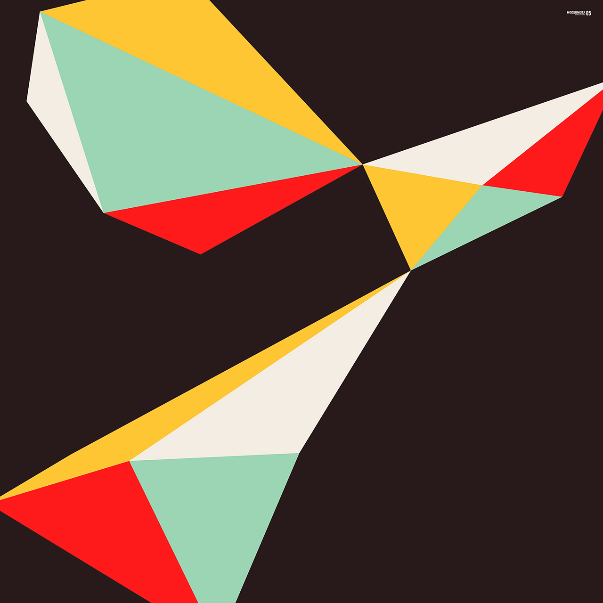

The pandemic restrictions forced us to stay at one place, if only for a
moment. To stop running and possibly build something, to spend more time with
the same people and to become familiar with our surroundings. Every year is
meant to be my depth year, every January, I tell myself that this time,
finally, I will look deeper into things. I typically don't follow through, and
this year might not have been as deep a year as I had hoped, but I can say that
my understanding of a few specific things have deepened.
By the year's end, I, along with a handful of amazing people, had brought a
little programming language into the world, it cannot
do much at all, but building this project brought me closer to understanding
the deeper questions I had about computation, especially how human-language
maps to symbols that computers can understand.

Between the air that's hard to breath due to
forest fires, and the water rationing that stops us from filling up our tanks,
the tumbling down of everything has, to my surprise, not paralyzed me as much
as I expected. It has been a constant creative force that pushed me through the
year to learn about food preservation, water purification, insulation, heating,
and various endeavors that I had previously overlooked, and that might come in
handy would things keep on deteriorating.
Among the more trivial things that brought me joy this year, I've
successfully grown a large lion's mane mushroom aboard the boat, worked on a
wonderful tribute of the Cat Clock with Rekka, did
plenty of origami with our friend's kids and played
accordion for the first time.
For the year of 2021, Edward Abbey's The Monkey Wrench Gang, was my favourite
book. The Lobster was my favourite movie. Tamaryn's Dreaming The Dark was my favourite album.
15Z
2021-12-17 Untitled
Revisited the tga format as a potential transfer format for Varvara applications such as Noodle. I've also been flicking through the massive collection of notes I've accumulated on the topic of paper computing and reflecting on this year that is now ending.
- Wrote a CHIP-8 emulator for Varvara.
15Y
2021-12-03 Untitled
Spent the first few days of December solving the Advent Of Code puzzles in Uxntal, got distracted, and started thinking about image support inside Left. I've also spent time experimenting with the Subleq virtual machine.
15X
2021-11-19 Untitled
Was away from Pino to visit family, spent our
evenings catching up and watching movies. Received a replacement keyboard for
Ayatori, it's good to be working on the Thinkpad
again.
15W
2021-11-05 Untitled
Wrote a little Brainfuck interpreter in Uxntal during this week's transits. My thoughts have been drifting back to primes and fractions, I've been considering a twist to Fractran where fractions with a zero as nominator or denominator might be used as jump operations, but I have yet to implement this.
15V
2021-10-22 Untitled
Decided to stop doing daily drawings and port Donsol instead. I had it all planned out in my head before starting, I went ahead and completed the port within just a few days. The work was done on a Pinebook Pro, revealing a few issues with Left, so I spent some time optimizing the text-editor so it would run faster.
15U
2021-10-08 Untitled
Spending the month of October between daily drawings, and various food preservation projects. As I work on a picture, I'll occasionally stop to improve Noodle in some way, correct a bit of friction here, make nicer there. The near totality of my computer activities(drawing, composing and programming) are now done from within the Uxn virtual machine! I couldn't be happier.
- Added guides for the line and rect tool, in Noodle.
- Added interface responsiveness, in Dexe.
15T
2021-09-24 Untitled
Rewrote Dexe to be compatible to the latest changes to Varvara. I'm unsure what to do about Oscean's RSS feeds, generating them in Uxntal will be hard, especially the date conversion. Maybe I could build the /now page's body from the twtxt feed, but if I did, I would loose the Arvelie timestamps and links..
- Picked up Moogle again and cleaned up the codebase.
15S
2021-09-10 Untitled
The gray weather gives us only a few hours of solar power each day, so we alternate between cleaning and doing other things, such as origami. I've been optimizing Orca, trying to make it run faster, inspired by the recent optimizations of Noodle.
15R
2021-08-27 Untitled
We're slowly sailing North toward Vancouver to see friends, we left Saturna for Ladysmith and Silva Bay, Pino has engine problems, again.
Currently rewriting Oscean in Uxntal, as an experiment to see how far I can push Uxn, and explore what a wiki from first principles might even look like. A few features have yet to be ported, but the main components are done.
- Finished nothing, started many.
15Q
2021-08-13 Untitled
We're anchored near Saturna, it's nice to be
working offgrid again.
After 16 years of daily journaling, I'm stopping. The problems I was originally attempting to tackle, such as moodswings and
the lack of focus, are now resolved and the additional data gathered during these more recent years
reveals nothing new or actionable. A bi-monthly format where I write a few
sentences on my recent interests might be more practical!
So, let's begin, once again.
- I've started porting paradise to Uxntal
- It would be nice to also port Oscean at some point.. I can dream.
incoming: archives